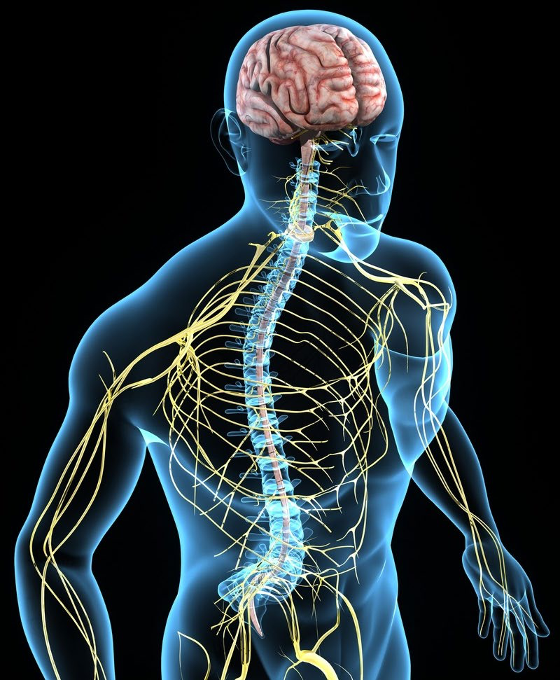

Key terms Use this as a revision checklist: try to define each term, then check with the matching question below. The human nervous system PracticeGlossary (part 1) Match each term with its definition. Unicellular…A nerve cell that transmits informationAll the chemical reactions that occur in an organismAll the nerves outside the brain and spinal cordAn organism made of many specialised cellsAn organism made of only one cellMovement of water across a semi-permeable membrane from high to low water potentialPassive movement of particles from high to low concentrationThe brain and spinal cord Multicellular…A nerve cell that transmits informationAll the chemical reactions that occur in an organismAll the nerves outside the brain and spinal cordAn organism made of many specialised cellsAn organism made of only one cellMovement of water across a semi-permeable membrane from high to low water potentialPassive movement of particles from high to low concentrationThe brain and spinal cord Metabolism…A nerve cell that transmits informationAll the chemical reactions that occur in an organismAll the nerves outside the brain and spinal cordAn organism made of many specialised cellsAn organism made of only one cellMovement of water across a semi-permeable membrane from high to low water potentialPassive movement of particles from high to low concentrationThe brain and spinal cord Diffusion…A nerve cell that transmits informationAll the chemical reactions that occur in an organismAll the nerves outside the brain and spinal cordAn organism made of many specialised cellsAn organism made of only one cellMovement of water across a semi-permeable membrane from high to low water potentialPassive movement of particles from high to low concentrationThe brain and spinal cord Osmosis…A nerve cell that transmits informationAll the chemical reactions that occur in an organismAll the nerves outside the brain and spinal cordAn organism made of many specialised cellsAn organism made of only one cellMovement of water across a semi-permeable membrane from high to low water potentialPassive movement of particles from high to low concentrationThe brain and spinal cord CNS…A nerve cell that transmits informationAll the chemical reactions that occur in an organismAll the nerves outside the brain and spinal cordAn organism made of many specialised cellsAn organism made of only one cellMovement of water across a semi-permeable membrane from high to low water potentialPassive movement of particles from high to low concentrationThe brain and spinal cord PNS…A nerve cell that transmits informationAll the chemical reactions that occur in an organismAll the nerves outside the brain and spinal cordAn organism made of many specialised cellsAn organism made of only one cellMovement of water across a semi-permeable membrane from high to low water potentialPassive movement of particles from high to low concentrationThe brain and spinal cord Neuron…A nerve cell that transmits informationAll the chemical reactions that occur in an organismAll the nerves outside the brain and spinal cordAn organism made of many specialised cellsAn organism made of only one cellMovement of water across a semi-permeable membrane from high to low water potentialPassive movement of particles from high to low concentrationThe brain and spinal cord Check answerReset PracticeGlossary (part 2) Match each term with its definition. Motor neuron…Carries messages from receptors to the CNSCarries messages from the CNS to effectorsConnects sensory and motor neurons in the CNSCoordinates balance and movementLargest part of the brain; thinking, memory and voluntary movementLinks nervous and endocrine systems; controls body temperaturePart of the brainstem controlling heartbeat and breathingThe gap between two neurons Sensory neuron…Carries messages from receptors to the CNSCarries messages from the CNS to effectorsConnects sensory and motor neurons in the CNSCoordinates balance and movementLargest part of the brain; thinking, memory and voluntary movementLinks nervous and endocrine systems; controls body temperaturePart of the brainstem controlling heartbeat and breathingThe gap between two neurons Interneuron…Carries messages from receptors to the CNSCarries messages from the CNS to effectorsConnects sensory and motor neurons in the CNSCoordinates balance and movementLargest part of the brain; thinking, memory and voluntary movementLinks nervous and endocrine systems; controls body temperaturePart of the brainstem controlling heartbeat and breathingThe gap between two neurons Synapse…Carries messages from receptors to the CNSCarries messages from the CNS to effectorsConnects sensory and motor neurons in the CNSCoordinates balance and movementLargest part of the brain; thinking, memory and voluntary movementLinks nervous and endocrine systems; controls body temperaturePart of the brainstem controlling heartbeat and breathingThe gap between two neurons Cerebrum…Carries messages from receptors to the CNSCarries messages from the CNS to effectorsConnects sensory and motor neurons in the CNSCoordinates balance and movementLargest part of the brain; thinking, memory and voluntary movementLinks nervous and endocrine systems; controls body temperaturePart of the brainstem controlling heartbeat and breathingThe gap between two neurons Cerebellum…Carries messages from receptors to the CNSCarries messages from the CNS to effectorsConnects sensory and motor neurons in the CNSCoordinates balance and movementLargest part of the brain; thinking, memory and voluntary movementLinks nervous and endocrine systems; controls body temperaturePart of the brainstem controlling heartbeat and breathingThe gap between two neurons Medulla oblongata…Carries messages from receptors to the CNSCarries messages from the CNS to effectorsConnects sensory and motor neurons in the CNSCoordinates balance and movementLargest part of the brain; thinking, memory and voluntary movementLinks nervous and endocrine systems; controls body temperaturePart of the brainstem controlling heartbeat and breathingThe gap between two neurons Hypothalamus…Carries messages from receptors to the CNSCarries messages from the CNS to effectorsConnects sensory and motor neurons in the CNSCoordinates balance and movementLargest part of the brain; thinking, memory and voluntary movementLinks nervous and endocrine systems; controls body temperaturePart of the brainstem controlling heartbeat and breathingThe gap between two neurons Check answerReset PracticeGlossary (part 3) Match each term with its definition. Pituitary gland…A chemical messenger carried in the blood to target cellsA fast, automatic nerve pathway through the spinal cordKeeping internal conditions within narrow limitsMaster gland that controls other endocrine glandsReceptors that detect temperatureStimulus, receptor, control centre, effector, response Reflex arc…A chemical messenger carried in the blood to target cellsA fast, automatic nerve pathway through the spinal cordKeeping internal conditions within narrow limitsMaster gland that controls other endocrine glandsReceptors that detect temperatureStimulus, receptor, control centre, effector, response Stimulus-Response Model…A chemical messenger carried in the blood to target cellsA fast, automatic nerve pathway through the spinal cordKeeping internal conditions within narrow limitsMaster gland that controls other endocrine glandsReceptors that detect temperatureStimulus, receptor, control centre, effector, response Thermoreceptors…A chemical messenger carried in the blood to target cellsA fast, automatic nerve pathway through the spinal cordKeeping internal conditions within narrow limitsMaster gland that controls other endocrine glandsReceptors that detect temperatureStimulus, receptor, control centre, effector, response Hormone…A chemical messenger carried in the blood to target cellsA fast, automatic nerve pathway through the spinal cordKeeping internal conditions within narrow limitsMaster gland that controls other endocrine glandsReceptors that detect temperatureStimulus, receptor, control centre, effector, response Homeostasis…A chemical messenger carried in the blood to target cellsA fast, automatic nerve pathway through the spinal cordKeeping internal conditions within narrow limitsMaster gland that controls other endocrine glandsReceptors that detect temperatureStimulus, receptor, control centre, effector, response Check answerReset